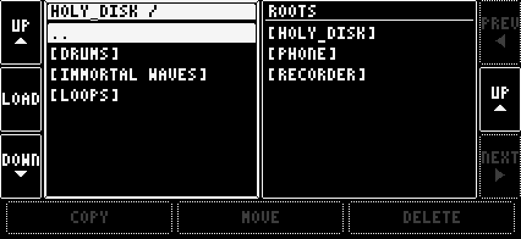

6 Samples
Every sampler machine loads through one browser. BROWSE on the main page opens it. It has two panes side by side, and each one starts at the list of places: HOLY_DISK, PHONE, RECORDER or DIGITAKT.

Open a place and move through its folders. UP and DOWN on the left pick a row, LOAD opens a folder or a zip file. On a sample, LOAD plays a preview; LOAD again puts it into the sampler. The pane you are in is the one with the cursor.

COPY, MOVE and DELETE work from one pane to the other: open the source on one side and the destination on the other.
The loaded sample sits on its pad, or in its slot on the other machines.

HOLY_DISK is the app's own disk, shared by every project. Keep your samples and sample packs there. AirDrop or share a sample or a folder to your iPhone and pick Open in Holy Grail. PHONE remembers the folders you pick in Files. IMMORTAL WAVES, a read-only library, comes with the app. DIGITAKT reads the Digitakt's samples while it is stopped.
A sound keeps its own copy of its samples, so moving or deleting files never breaks a saved sound.